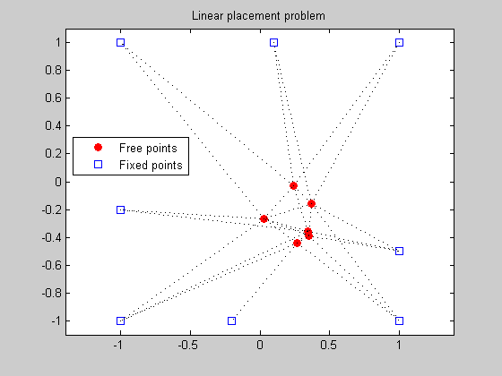
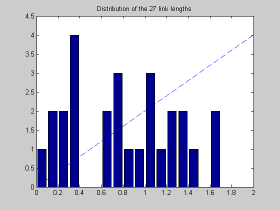

Figure 8.15: Linear placement problem
linewidth = 1;
markersize = 5;
fixed = [ 1 1 -1 -1 1 -1 -0.2 0.1;
1 -1 -1 1 -0.5 -0.2 -1 1]';
M = size(fixed,1);
N = 6;
A = [ 1 0 0 -1 0 0 0 0 0 0 0 0 0 0
1 0 -1 0 0 0 0 0 0 0 0 0 0 0
1 0 0 0 -1 0 0 0 0 0 0 0 0 0
1 0 0 0 0 0 -1 0 0 0 0 0 0 0
1 0 0 0 0 0 0 -1 0 0 0 0 0 0
1 0 0 0 0 0 0 0 0 0 -1 0 0 0
1 0 0 0 0 0 0 0 0 0 0 0 0 -1
0 1 -1 0 0 0 0 0 0 0 0 0 0 0
0 1 0 -1 0 0 0 0 0 0 0 0 0 0
0 1 0 0 0 -1 0 0 0 0 0 0 0 0
0 1 0 0 0 0 0 -1 0 0 0 0 0 0
0 1 0 0 0 0 0 0 -1 0 0 0 0 0
0 1 0 0 0 0 0 0 0 0 0 0 -1 0
0 0 1 -1 0 0 0 0 0 0 0 0 0 0
0 0 1 0 0 0 0 -1 0 0 0 0 0 0
0 0 1 0 0 0 0 0 0 0 -1 0 0 0
0 0 0 1 -1 0 0 0 0 0 0 0 0 0
0 0 0 1 0 0 0 0 -1 0 0 0 0 0
0 0 0 1 0 0 0 0 0 -1 0 0 0 0
0 0 0 1 0 0 0 0 0 0 0 -1 0 0
0 0 0 1 0 -1 0 0 0 0 0 -1 0 0
0 0 0 0 1 -1 0 0 0 0 0 0 0 0
0 0 0 0 1 0 -1 0 0 0 0 0 0 0
0 0 0 0 1 0 0 0 0 -1 0 0 0 0
0 0 0 0 1 0 0 0 0 0 0 0 0 -1
0 0 0 0 0 1 0 0 -1 0 0 0 0 0
0 0 0 0 0 1 0 0 0 0 -1 0 0 0 ];
nolinks = size(A,1);
fprintf(1,'Computing the optimal locations of the 6 free points...');
cvx_begin
variable x(N+M,2)
minimize ( sum(norms( A*x,2,2 )))
x(N+[1:M],:) == fixed;
cvx_end
fprintf(1,'Done! \n');
free_sum = x(1:N,:);
figure(1);
dots = plot(free_sum(:,1), free_sum(:,2), 'or', fixed(:,1), fixed(:,2), 'bs');
set(dots(1),'MarkerFaceColor','red');
hold on
legend('Free points','Fixed points','Location','Best');
for i=1:nolinks
ind = find(A(i,:));
line2 = plot(x(ind,1), x(ind,2), ':k');
hold on
set(line2,'LineWidth',linewidth);
end
axis([-1.1 1.1 -1.1 1.1]) ;
axis equal;
title('Linear placement problem');
figure(2)
all = [free_sum; fixed];
bins = 0.05:0.1:1.95;
lengths = sqrt(sum((A*all).^2')');
[N2,hist2] = hist(lengths,bins);
bar(hist2,N2);
hold on;
xx = linspace(0,2,1000); yy = 2*xx;
plot(xx,yy,'--');
axis([0 2 0 4.5]);
hold on
plot([0 2], [0 0 ], 'k-');
title('Distribution of the 27 link lengths');
Computing the optimal locations of the 6 free points...
Calling SeDuMi: 93 variables (12 free), 54 equality constraints
------------------------------------------------------------------------
SeDuMi 1.1 by AdvOL, 2005 and Jos F. Sturm, 1998, 2001-2003.
Alg = 2: xz-corrector, Adaptive Step-Differentiation, theta = 0.250, beta = 0.500
Split 12 free variables
eqs m = 54, order n = 79, dim = 106, blocks = 28
nnz(A) = 254 + 0, nnz(ADA) = 804, nnz(L) = 811
it : b*y gap delta rate t/tP* t/tD* feas cg cg prec
0 : 2.20E+001 0.000
1 : 1.80E+001 6.07E+000 0.000 0.2758 0.9000 0.9000 2.08 1 1 9.2E-001
2 : 2.09E+001 1.36E+000 0.000 0.2241 0.9000 0.9000 1.23 1 1 2.1E-001
3 : 2.17E+001 2.69E-001 0.000 0.1975 0.9000 0.9000 1.04 1 1 4.1E-002
4 : 2.19E+001 4.91E-002 0.000 0.1827 0.9000 0.9000 1.01 1 1 7.5E-003
5 : 2.19E+001 3.91E-003 0.026 0.0796 0.9900 0.9900 1.00 1 1 6.0E-004
6 : 2.19E+001 1.13E-004 0.000 0.0288 0.9902 0.9900 1.00 1 1 2.0E-005
7 : 2.19E+001 7.27E-006 0.365 0.0646 0.9900 0.9900 1.00 1 1 1.3E-006
8 : 2.19E+001 1.49E-006 0.000 0.2045 0.9046 0.9000 1.00 1 1 2.8E-007
9 : 2.19E+001 1.47E-007 0.379 0.0991 0.9900 0.9900 1.00 2 2 2.8E-008
10 : 2.19E+001 3.74E-008 0.000 0.2539 0.9000 0.6125 1.00 2 2 1.0E-008
iter seconds digits c*x b*y
10 0.1 8.3 2.1908263842e+001 2.1908263730e+001
|Ax-b| = 2.4e-009, [Ay-c]_+ = 2.9E-009, |x|= 9.4e+000, |y|= 7.9e+000
Detailed timing (sec)
Pre IPM Post
0.000E+000 1.001E-001 0.000E+000
Max-norms: ||b||=1, ||c|| = 1,
Cholesky |add|=0, |skip| = 0, ||L.L|| = 7.13504.
------------------------------------------------------------------------
Status: Solved
Optimal value (cvx_optval): +21.9083
Done!
 